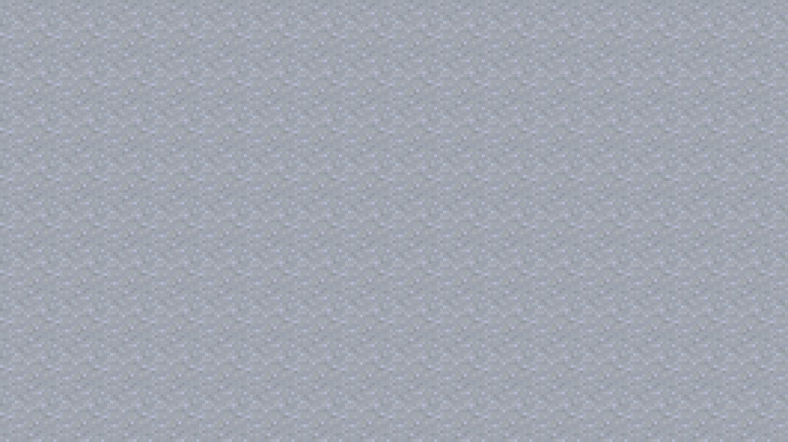
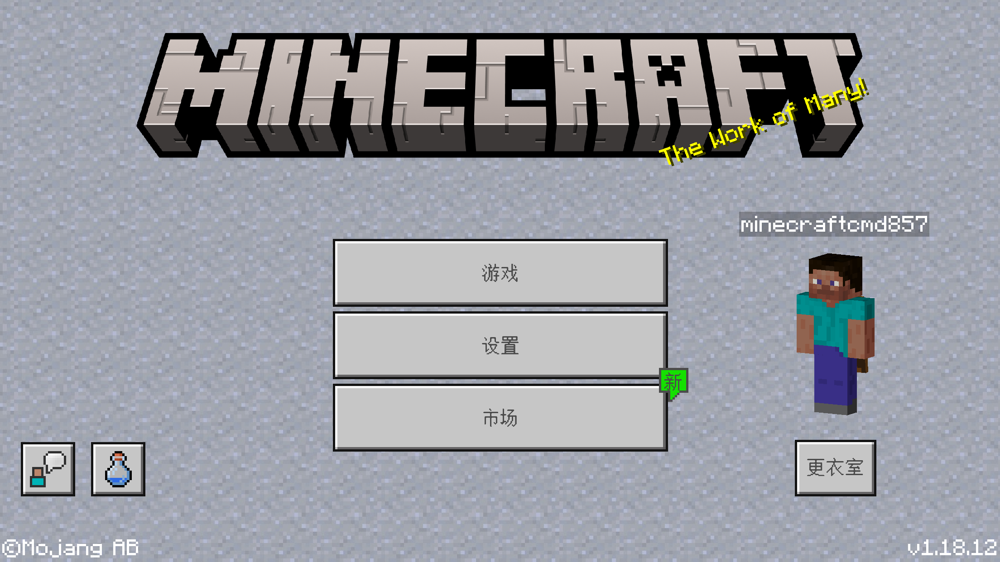

这里以start_screen.json（开始界面）为例
首先，可以看到 .hh更换皮肤的界面与start界面的背景不同
要做到样其实很简单 .hh这里以下图作为背景示例
首先准备图片并放入指定路径，然后在想添加背景的文件写好图片控件
- "background": {
. "type": "image",
. "texture": "textures/ui/background",
. "layer": -100,
. "fill": true
.}
* 图片控件最好加上"fill": true属性
写好控件后，在文件中找到控件名带有“@common.base_screen”的控件
并在这个控件下方添加属性
.ep.bb $screen_bg_content ..bb .et屏幕背景..et值：字符串/控件 .hh默认值：common.empty_panel .hh例如："$screen_bg_content": "start.background" .hh.tip提示：值最好填上"命名空间.控件名" .hh命名空间是这个json文件开头的.bb"namespace"..bb键后面的值..tip
..ep填完后代码就像这样子
- "background": {
. "type": "image",
. "texture": "textures/ui/background",
. "layer": -100,
. "fill": true
.},
.
."start_screen@common.base_screen": {
. // 此处省略了一些无关的代码
. "$screen_content": "start.start_screen_content",
. "$screen_bg_content": "start.background"
.}